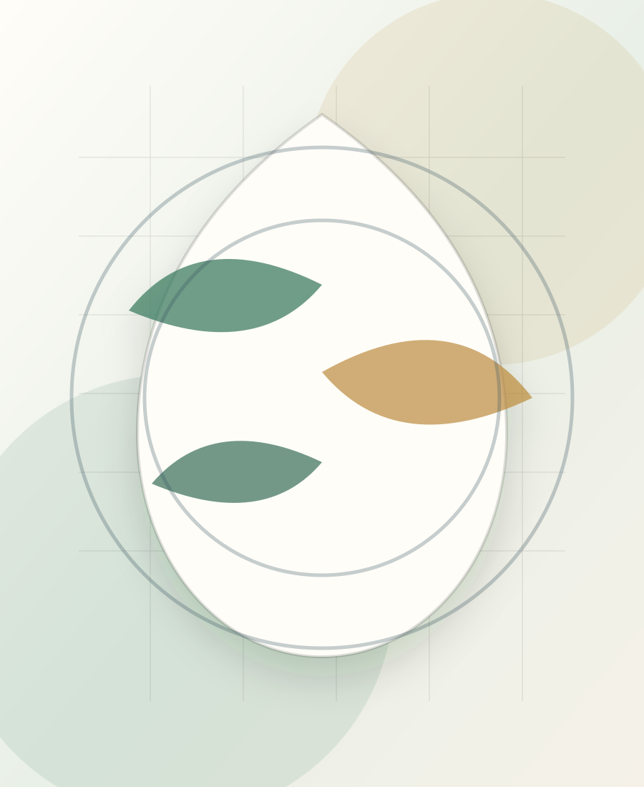

Totalistic diagnosis
Comprehensive dialogue to map root causes, disease phase, and constitutional baseline.
A deeply humane Ayurvedic practice focused on Prakriti, Samprapti, causative inquiry, and the restoration of systemic harmony rather than symptom-only relief.

The clinical process studies the patient’s constitution, disease evolution, lifestyle, environment, food habits, and physiological patterns before a protocol is chosen.
Comprehensive dialogue to map root causes, disease phase, and constitutional baseline.
Customized dietary and behavioral changes designed around the individual’s condition and context.
Classical Ayurvedic therapies and formulations directed toward systemic restoration.
The practice speaks to patients seeking serious Ayurvedic care for long-term and recurring conditions.
The page now uses a real clinical image as a section anchor, while the focus areas remain text-led and easy to scan.
Diabetes, hypertension, metabolic syndrome, and daily-regimen correction.
Inflammatory and degenerative conditions approached through systemic balance.
Digestive disorders, liver and spleen dysfunctions, and related metabolic disturbance.
Women’s disorders and infertility viewed through constitutional and pathogenesis-based care.
"Either virtue or friendship or wealth or honour or at least practice, the profession of healing is never futile."
For consultation, use the contact page and describe the concern, duration, previous treatment history, and current reports where relevant.